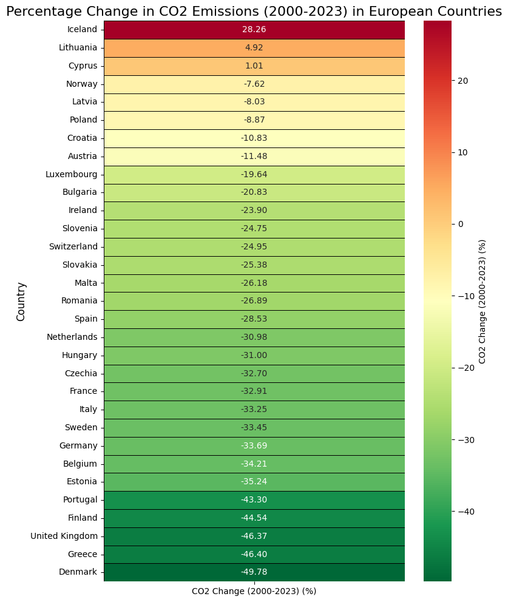

Visualizations#
Europe’s Energy Transition: Urgency Meets Reality#
Europe’s energy landscape is undergoing a rapid, necessary transformation. The dual challenges of climate urgency and economic reality frame this important shift. Fully decarbonizing the continent’s energy system demands immense investment, estimated at trillions of euros (European Commission, 2020), even as renewable energy technologies become increasingly cost-competitive (IRENA, 2021). Our analysis delves into how Europe is navigating these complexities, powered by insights from recent data.
The Climate Urgency Imperative#
Beyond economic considerations, the climate crisis itself demands an accelerated energy transition. The urgency is underscored by Europe’s current carbon footprint. The Total CO2 emissions in Europe (2023 data) chloropleth map illustrates that Germany, France, Poland, and the United Kingdom are still among the highest emitters, with Germany alone approaching 600 million tonnes. These current emission levels contribute directly to global warming and its pervasive impacts.
Show code cell source
import pandas as pd
import plotly.express as px
# Load the dataset
owid_co2_data_df = pd.read_csv('owid-co2-data.csv')
# Define a list of European countries
european_countries = [
'Austria', 'Belgium', 'Bulgaria', 'Croatia', 'Cyprus', 'Czechia', 'Denmark',
'Estonia', 'Finland', 'France', 'Germany', 'Greece', 'Hungary', 'Ireland',
'Italy', 'Latvia', 'Lithuania', 'Luxembourg', 'Malta', 'Netherlands',
'Poland', 'Portugal', 'Romania', 'Slovakia', 'Slovenia', 'Spain', 'Sweden',
'United Kingdom', 'Norway', 'Switzerland', 'Iceland'
]
# Filter for European countries and select relevant columns
df_europe_co2 = owid_co2_data_df[owid_co2_data_df['country'].isin(european_countries)].copy()
# Find the latest year with CO2 data for each country
latest_year_co2 = df_europe_co2.dropna(subset=['co2']).groupby('country')['year'].max().reset_index()
df_latest_co2_data = pd.merge(df_europe_co2, latest_year_co2, on=['country', 'year'])
# Ensure 'iso_code' is available for plotting (Plotly needs ISO codes for countries)
df_latest_co2_data.dropna(subset=['iso_code', 'co2'], inplace=True)
# Create the choropleth map
fig = px.choropleth(df_latest_co2_data,
locations="iso_code",
color="co2", # Data to be colored
hover_name="country",
hover_data={"co2": ":.2f", "year": True}, # Show CO2 formatted and year
color_continuous_scale=px.colors.sequential.Plasma, # Choose a color scale
projection="natural earth", # A good projection for global/continental maps
title=f"Total CO2 Emissions in Europe ({df_latest_co2_data['year'].max()} Data)",
labels={'co2': 'Total CO2 Emissions (million tonnes)'})
# Focus the map on Europe (adjusting the scope and center)
fig.update_geos(
scope='europe',
lataxis_range=[30, 75], # Latitude range for Europe
lonaxis_range=[-25, 45], # Longitude range for Europe
showcountries=True, countrycolor="Black"
)
fig.update_layout(height=600) # Adjust height for better visibility
# Show the plot
fig.show()
Critically, many European countries have made substantial progress in reducing their emissions over time. The Percentage Change in CO2 Emissions (2000 - 2023) in European Countries map, presented as a subdivided rectangle, illustrates this varied success. Nations like Denmark, Portugal, the Netherlands, Ireland, and Austria have achieved significant reductions (e.g., Denmark -49.78%, Portugal -43.30%). However, a few countries, notably Iceland (+28.26%) and Lithuania (+4.92%), have seen increases, highlighting that the decarbonization pathway is not uniform and requires continued, tailored efforts.
Show code cell source
import pandas as pd
import matplotlib.pyplot as plt
import seaborn as sns
# Load the dataset
owid_co2_data_df = pd.read_csv('owid-co2-data.csv')
# List of European countries (can be adjusted)
european_countries = [
'Austria', 'Belgium', 'Bulgaria', 'Croatia', 'Cyprus', 'Czechia', 'Denmark',
'Estonia', 'Finland', 'France', 'Germany', 'Greece', 'Hungary', 'Ireland',
'Italy', 'Latvia', 'Lithuania', 'Luxembourg', 'Malta', 'Netherlands',
'Poland', 'Portugal', 'Romania', 'Slovakia', 'Slovenia', 'Spain', 'Sweden',
'United Kingdom', 'Norway', 'Switzerland', 'Iceland'
]
# Filter for European countries and relevant years
start_year_v8 = 2000
end_year_v8 = owid_co2_data_df['year'].max() # Get the latest year available in the dataset
df_co2_change = owid_co2_data_df[
(owid_co2_data_df['country'].isin(european_countries)) &
((owid_co2_data_df['year'] == start_year_v8) | (owid_co2_data_df['year'] == end_year_v8))
].copy()
# Pivot the table to get start and end year CO2 emissions side by side for each country
df_co2_pivot = df_co2_change.pivot_table(index='country', columns='year', values='co2').reset_index()
df_co2_pivot.columns.name = None # Remove the columns name attribute
# Calculate percentage change
df_co2_pivot['CO2 Change (%)'] = ((df_co2_pivot[end_year_v8] - df_co2_pivot[start_year_v8]) / df_co2_pivot[start_year_v8]) * 100
# Drop rows with NaN values in 'CO2 Change (%)' (countries for which data is not complete for both years)
df_co2_change_final = df_co2_pivot.dropna(subset=['CO2 Change (%)']).sort_values(by='CO2 Change (%)', ascending=False)
# Prepare data for heatmap: reshape to a single column for the value to be mapped to color
# For a single column, a bar chart or a "strip" heatmap is typically used.
# To make it a heatmap, we can create a dummy column.
df_heatmap_data = df_co2_change_final[['country', 'CO2 Change (%)']].copy()
df_heatmap_data['Metric'] = f'CO2 Change ({start_year_v8}-{end_year_v8}) (%)'
# Create a pivot table suitable for heatmap (country vs. metric)
heatmap_pivot = df_heatmap_data.pivot_table(index='country', columns='Metric', values='CO2 Change (%)')
# Sort the index of the pivot table to match the sorted order from df_co2_change_final
heatmap_pivot = heatmap_pivot.reindex(df_co2_change_final['country'])
plt.figure(figsize=(8, 12))
sns.heatmap(heatmap_pivot,
annot=True,
cmap='RdYlGn_r', # Red-Yellow-Green, reversed for green (good/reduction) to red (bad/increase)
fmt=".2f",
linewidths=.5,
linecolor='black',
cbar_kws={'label': f'CO2 Change ({start_year_v8}-{end_year_v8}) (%)'})
plt.title(f'Percentage Change in CO2 Emissions ({start_year_v8}-{end_year_v8}) in European Countries', fontsize=16)
plt.ylabel('Country', fontsize=12)
plt.yticks(rotation=0) # Keep country names horizontal
plt.xlabel('') # Remove x-label as it's a dummy column
plt.show()

Climate scientists consistently warn of limited time to act effectively, with global CO2 emissions needing drastic cuts by 2030 to limit warming to 1.5°C (IPCC, 2022). The ongoing presence of high total emissions in key European economies, as shown by the Total CO2 emissions in Europe (2023 data) map, underscores the immediate imperative for these nations to accelerate their transition.
In conclusion, Europe’s energy transition is a complex balancing act between climate imperative and economic reality. While some countries are leading the way in renewable adoption and emission reductions, the continent still faces significant challenges in decarbonizing major economies, managing price volatility, and addressing the legacy of fossil fuel use. The insights from these eight graphs collectively paint a detailed picture of progress, persistent hurdles, and the immense, urgent task ahead for Europe to secure a clean and reliable energy future.